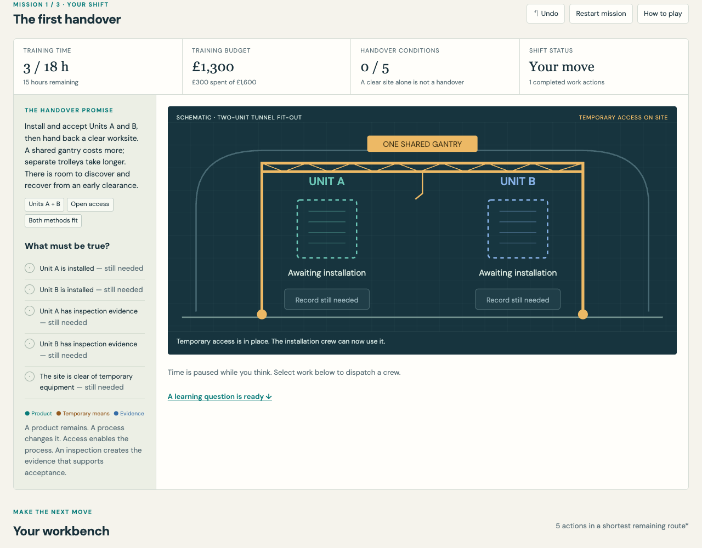
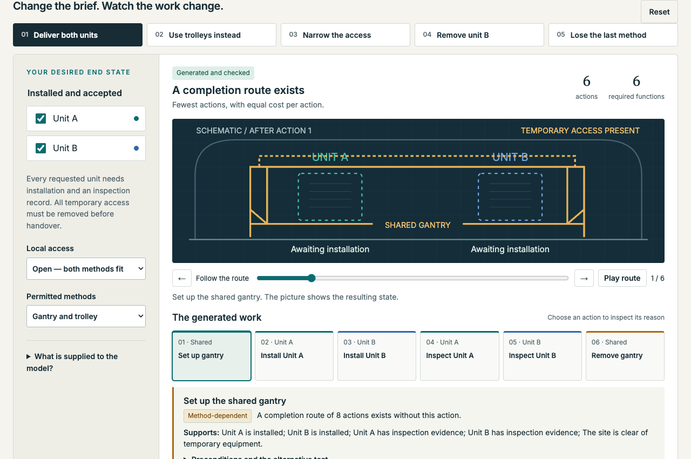

Try the distinctions
The handover game
Choose the work needed to deliver an accepted installation. Discover why a finished product alone does not reveal all the work.
Play the game →
Portfolio Wave · Foray 210

Toy scenario
A finished tunnel needs more than permanent lining: excavation, temporary access and support, installed systems, inspections and evidence all play different roles. Smaller installation examples let us test those distinctions without pretending to engineer the whole tunnel.
Can a description of the desired result explain the work needed to achieve it?
Solway is an experimental setting for semantic project planning. Can we explain the work a goal requires by distinguishing physical products, processes, temporary means and evidence?
Try the distinctions
Choose the work needed to deliver an accepted installation. Discover why a finished product alone does not reveal all the work.
Play the game →
Inspect the construction
Change scope, access or methods. Follow shared work and causal support, try two work breakdowns, and compare ontology with executable PDDL.

The broader tunnel ontology remains available for exploration. The app collection includes separate investigations of temporal relations, local-to-global construction and ontology auditing.
These are synthetic experiments. Model checks establish results within declared assumptions; they do not establish an engineered tunnel design or practitioner validation.